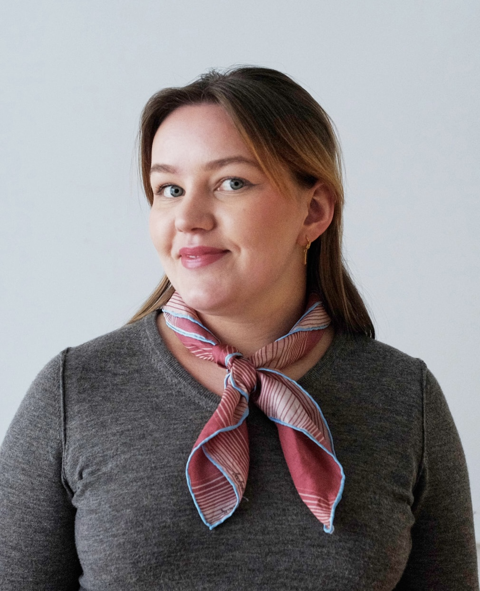
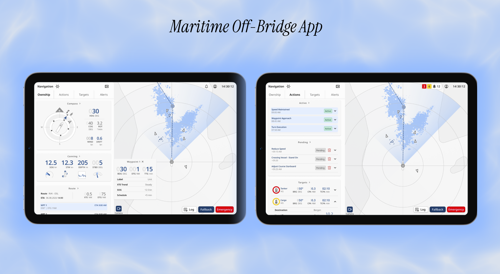

My master's thesis
An ongoing research and design project completing my master's in Informatics: Design, Use and Interaction. More about the topic, process and findings will be shared as the work develops.
UX designer and developer
’m Emily, a master’s student in Informatics: Design, Use and Interaction at the University of Oslo. I combine user research, creative interaction design and technical understanding to create digital solutions that feel intuitive, engaging and meaningful.

Current projects
An ongoing research and design project completing my master's in Informatics: Design, Use and Interaction. More about the topic, process and findings will be shared as the work develops.

Design work for a maritime desktop and tablet solution for autonomous ships, enabling navigators to temporarily leave the bridge without losing situational awareness. The project explores how complex navigational information, alerts and necessary actions can be communicated clearly and intuitively in a safety-critical context.
Selected work
 01
01
 02
02
A platform for planning school visits and carrying out school inspections. Built with the DHIS2 design system, it brings visit planning, geographical overview and an inspection form into one workflow.
Read more 03
03
 04
04
A desktop app grounded in interviews with remote workers, designed for low-pressure contact and a stronger sense of social belonging.
Read more 05
05
A physical desktop light with break intervals, developed through interviews and workshops to support eye health and work balance.
Read moreAbout
I am currently pursuing a master's in Informatics: Design, Use and Interaction at the University of Oslo. I'm on my last year and I'm currently working on my thesis.
As a master’s student, I explore the entire design process from unclear needs to thoughtful solutions. I thrive at the intersection of people, design and technology, and I’m motivated by new and challenging problems, particularly when user insight can make complex choices simpler and easier to understand.
View résuméDesign tools
Development
Research methods
Contact
Open to design roles, internships, and interesting collaborations.
emilyomyhre@gmail.com